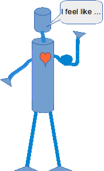

Properties vs. Getters and Setters
Properties
Getters and setters are used in many object oriented programming languages to ensure the principle of data encapsulation. They are known as mutator methods as well. Data encapsulation - as we have learnt in our introduction on Object Oriented Programming of our tutorial - is seen as the bundling of data with the methods that operate on these data. These methods are of course the getter for retrieving the data and the setter for changing the data. According to this principle, the attributes of a class are made private to hide and protect them from other code.
Unfortunately, it is widespread belief, that a proper Python class should encapsulate private attributes by using getters and setters. As soon as one of these programmers introduces a new attribute, he or she will make it a private variable and creates "automatically" a getter and a setter for this attributes. Such programmers may even use an editor or an IDE, which automatically create getters and setters for all private attributes. These tools even warn the programmer if she or he uses a public attribute! Java programmers will wrinkle their brows, screw up their noses, or even scream with horror when they read the following: The Pythonic way to introduce attributes is to make them public.
We will explain this later. First, we demonstrate in the following example, how we can design a class in a Javaesque way with getters and setters to encapsulate the private attribute "self.__x":
class P:
def __init__(self,x):
self.__x = x
def getX(self):
return self.__x
def setX(self, x):
self.__x = x
We can see in the following demo session how to work with this class and the methods:
>>> from mutators import P >>> p1 = P(42) >>> p2 = P(4711) >>> p1.getX() 42 >>> p1.setX(47) >>> p1.setX(p1.getX()+p2.getX()) >>> p1.getX() 4758 >>>
What do you thing about the expression "p1.setX(p1.getX()+p2.getX())"? It's ugly, isn't it? It's a lot easier to write an expression like the following, if we had a public attribute x:
p1.x = p1.x + p2.y
Such an assignment is easier to write and above all easier to read than the Javaesque expression.
Let's rewrite the class P in a Pythonic way. No getter, no setter and instead of the private attribute "self.__x" we use a public one:
class P:
def __init__(self,x):
self.x = x
Beautiful, isn't it? Just three lines of code, if we don't count the blank line!
>>> from p import P >>> p1 = P(42) >>> p2 = P(4711) >>> p1.x 42 >>> p1.x = 47 >>> p1.x = p1.x + p2.x >>> p1.x 4758 >>>"But, but, but, but, but ... ", we can here them howling and screaming, "But there is NO data ENCAPSULATION!"
Yes, in this case there is no data encapsulation. We don't need it in this case. The only thing getX and setX in our starting example did was "getting the data through" without doing anything, no checks nothing.
But what happens, if we want to change the implementation in the future. This is a serious argument. Let's assume, we want to change the implementation like this: The attribute x can have values between 0 and 1000. If a value larger than 1000 is assigned, x should be set to 1000. Correspondingly, x should be set to 0, if the value is less than 0.
It is easy to change our first P class to cover this problem. We change the setX method accordingly:
class P:
def __init__(self,x):
self.setX(x)
def getX(self):
return self.__x
def setX(self, x):
if x < 0:
self.__x = 0
elif x > 1000:
self.__x = 1000
else:
self.__x = x
The following Python session shows, that it works the way we want it to work:
>>> from mutators import P >>> p1 = P(1001) >>> p1.getX() 1000 >>> p2 = P(15) >>> p2.getX() 15 >>> p3 = P(-1) >>> p3.getX() 0But there is a catch: Let's assume we have designed our class with the public attribute and no methods. People have already used it a lot and they have written code like this:
from p import P p1 = P(42) p1.x = 1001Our new class means breaking the interface. The attribute x is not available anymore. That's why in Java e.g. people are recommended to use only private attributes with getters and setters, so that they can change the implementation without having to change the interface.
But Python offers a solution to this problem. The solution is called properties!
The class with a property looks like this:
class P:
def __init__(self,x):
self.x = x
@property
def x(self):
return self.__x
@x.setter
def x(self, x):
if x < 0:
self.__x = 0
elif x > 1000:
self.__x = 1000
else:
self.__x = x
A method which is used for setting a value is decorated with "@property", i.e. we put this
line directly in front of the header. The method which has to function as the setter is decorated
with "@x.setter". If the function had been called "f", we would have had to decorate it with "@f.setter".
Two things are noteworthy: We just put the code line "self.x = x" in the __init__ method and the property method x is used to check the limits of the values. The second interesting thing is, that we wrote "two" methods with the same name and a different number of parameters "def x(self)" and "def x(self,x)". We have learned in a previous chapter of our course, that this is not possible. It works here due to the decorating:
>>> from p import P >>> p1 = P(1001) >>> p1.x 1000 >>> p1.x = -12 >>> p1.x 0 >>>Alternatively, we could have used a different syntax without decorators to define the property. As you can see, the code is definitely less elegant and we have to make sure, that we use the getter function in the __init__ method again:
class P:
def __init__(self,x):
self.setX(x)
def getX(self):
return self.__x
def setX(self, x):
if x < 0:
self.__x = 0
elif x > 1000:
self.__x = 1000
else:
self.__x = x
x = property(getX, setX)

There is still another problem in the most recent version. We have now two ways to access or change the value of x: Either by using "p1.x = 42" or by "p1.setX(42)". This way we are violating one of the fundamentals of Python: "There should be one-- and preferably only one --obvious way to do it." (see Zen of Python) So our decorator version is the best solution!
From what we have written so far, and what can be seen in other books and tutorials as well, we could easily get the impression, that there is a one-to-one connection between properties (or mutator methods) and the attributes, i.e. that each attribute has or should have its own property (or getter-setter-pair) and the other way around. Even in other object oriented languages than Python, it's usually not a god idea to implement a class like that. The main reason is, that many attributes are only internally needed and creating interfaces for the user of the class increases unnecessarily the usability of the class. The possible user of a class shouldn't be "drowned" with umpteen - of mainly unnecessary - methods or properties!
The following example shows a class, which has internal attributes, which can't be accessed from outside. These are the private attributes self.__potential_physical and self.__potential_psychic. Furthermore we show, that a property can be deduced from the values of more than one attribute. The property "condition" of our example returns the condition of the robot in a descriptive string. The condition depends on the sum of the values of the psychic and the physical conditions of the robot.
class Robot:
def __init__(self, name, build_year, lk = 0.5, lp = 0.5 ):
self.name = name
self.build_year = build_year
self.__potential_physical = lk
self.__potential_psychic = lp
@property
def condition(self):
s = self.__potential_physical + self.__potential_psychic
if s <= -1:
return "I feel miserable!"
elif s <= 0:
return "I feel bad!"
elif s <= 0.5:
return "Could be worse!"
elif s <= 1:
return "Seems to be okay!"
else:
return "Great!"
if __name__ == "__main__":
x = Robot("Marvin", 1979, 0.2, 0.4 )
y = Robot("Caliban", 1993, -0.4, 0.3)
print(x.condition)
print(y.condition)
Public instead of Private Attributes
Let's summarize the usage of private and public attributes, getters and setters and properties: Let's assume, that we are designing a new class and we pondering about an instance or class attribute "OurAtt", which we need for the design of our class. We have to observe the following issues:- Will the value of "OurAtt" be needed by the possible users of our class?
- If not, we can or should make it a private attribute.
- If it has to be accessed, we make it accessible as a public attribute
- We will define it as a private attribute with the corresponding property, if and only if we have to do some checks or transformation of the data. (As an example, you can have a look again at our class P, where the attribute has to be in the interval between 0 and 1000, which is ensured by the property "x")
- Alternatively, you could use a getter and a setter, but using a property is the Pythonic way to deal with it!
class OurClass:
def __init__(self, a):
self.OurAtt = a
x = OurClass(10)
print(x.OurAtt)
|
|
class OurClass:
def __init__(self, a):
self.OurAtt = a
@property
def OurAtt(self):
return self.__OurAtt
@OurAtt.setter
def OurAtt(self, val):
if val < 0:
self.__OurAtt = 0
elif val > 1000:
self.__OurAtt = 1000
else:
self.__OurAtt = val
x = OurClass(10)
print(x.OurAtt)
|
Something else, you might have already noticed: For the users of a class, properties are syntactically identical to ordinary attributes.